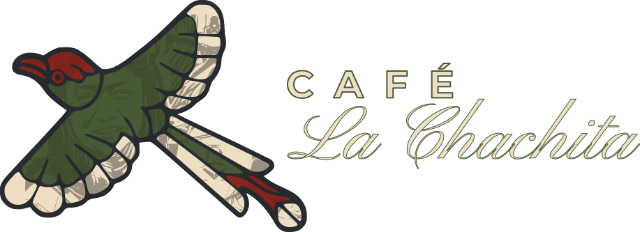
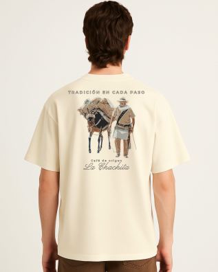
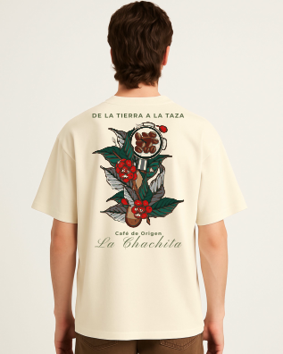
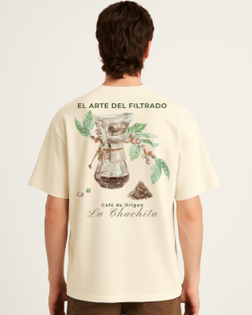

Tradición, aroma y sabor excepcional cultivado con pasión en nuestra finca. Una experiencia sensorial única directo a tu taza.
Disfruta de Café La Chachita en sus diferentes perfiles de taza
Café La Chachita: se bebe, se siente, se viste.

Moda urbana corte oversize con tela premium inspirada en acuarela de nuestros arrieros
$69,000 COP
Comprar ahora
En su corte oversize con tela premium realiza la transición del cafeto a su nectar
$69,000 COP
Comprar ahora
Bajo lo urbano oversize y tela premium que incita a una extracción de calidad
$69,000 COP
Comprar ahoraEn el corazón de nuestras tierras cafeteras se encuentra **Villa Chachita**, el hogar donde nace nuestro producto estrella. Aquí, el clima perfecto, la altura ideal y el cuidado minucioso de cada planta permiten la creación de un grano sobresaliente.
Cada bolsa de **Café La Chachita** es el resultado de un proceso artesanal y sostenible, recolectado a mano para garantizar que solo los mejores frutos lleguen a tu mesa.